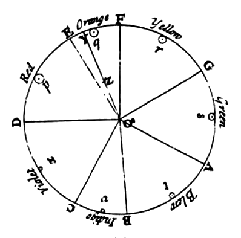

Welcome to the wonderful world of Isaac Newton’s Opticks: Or, a Treatise of the Reflexions, Refractions, Inflexions and Colours of Light. Opticks was first published in 1704, and was Newton’s follow up to his more famous text Principia, which was where Newton first introduced his theories of gravitation. This webpage was created to digitize and attempt to preserve some of the Opticks text. Everything on the webpage is meant to capture some aspect of the original Opticks text, whether as a tribute, like the digitally recreated cover above, the Garamond font you see here, or as supplemental material in the form of bibliographic analysis.
Opticks became immensely influential in the science community because of its numerous revelations regarding light, an oft debated topic at the time, and even in the modern day. Opticks was influential in other realms though as well, especially because of how it was published. Opticks was one of the first major scientific texts that was published in English as opposed to Latin. Opticks contributed to the idea of English as a language that signified modernity and
progress in the intellectual world. Opticks being in English also lead to greater accessibility and comprehension amongst Newton’s contemporaries. Even from a modern perspective the text is very readable, although a bit dated grammatically.
As you read through this webpage there will be different visualizations separated by line breaks like the one below this section of text. Commentary and explanations for the visualizations will begin after line breaks like the one above this section of text. The page is divided into these sections to mimic the feeling of opening up Opticks to a random page or chapter, as there are so many different things to discover within the text, and linear reading is not necessarily the best way to absorb the text. This helps translate the many different mediums Opticks uses to convey scientific concepts into something that one can experience digitally.
Frequency Filtration
Above are two of Newton’s queries on light. On the top right is a button that changes the opacity of text based on frequency. The more frequent a word is the lighter it becomes. These queries were the third book of Opticks, and contained Newton's musings on questions and observations that he believed were the future puzzles of the study of light.
This is an example of bibliographic analysis used in a way to simplify a text. Often a dense physics text such as Opticks is dull and difficult to read through linearly. This analysis acts like a filter, allowing you to ignore the lightest words, skim the medium, and easily read the darkest. Often times with scientific texts it is easy to get science entangled and lost within the sentence. Readers of these texts tend to skip over certain phrases or words in order to grasp onto the scientific thoughts that this sentence is trying to represent. Looking at a textbook from a Saussurian prospective, it is very inorganic and foreign for a scientist to write his scientific thoughts down, as their new ideas are similar to forming a new word, seeking to differentiate their idea with a sentence different than all other sentences that have come before it.
Newton is dealing with intensely complex equations and ideas that are within his mind. Having to articulate them to others can be difficult enough, but getting them down on paper presents an even more challenging idea. In person, one has the luxury of being able to answer questions and restructuring their phrases. Writing brings the difficulty of needing to be clear and engaging while explaining a new unique idea, different than what anyone has thought of before. A textbook struggles with this idea more so than other texts, as it requires language to signify things that often have not been conceptualized before. Saussure discusses the idea of language as a series of differentials, and scientists unknowingly execute this idea with every explanation of a new finding.
With their writing, scientists have to create ways of explaining to others what they have found that is different, just like Saussure’s idea of new words stemming from a place of differentiating. Scientists preform this Saussurian belief every time they record a new discovery, creating a new sentence that differentiates a new piece of information about the world. This is a great power that scientists hold, and much like words, facts cannot be created without substantial work done beforehand or some sort of eureka moment. Locke mentions this idea when speaking of the formation of words by mentioning Augustus, the great ruler:
Much like Augustus with words, no man has the power to make up science. It requires moments of brilliance, or careful research, and more so requires an elegant way of differentiating this information to the world. With that being said, take a look at the above frequency analysis again, and see if you find find the carefully chose words that Newton uses to convey the key ideas and differences of these queries.
This is an example of bibliographic analysis used in a way to simplify a text. Often a dense physics text such as Opticks is dull and difficult to read through linearly. This analysis acts like a filter, allowing you to ignore the lightest words, skim the medium, and easily read the darkest. Often times with scientific texts it is easy to get science entangled and lost within the sentence. Readers of these texts tend to skip over certain phrases or words in order to grasp onto the scientific thoughts that this sentence is trying to represent. Looking at a textbook from a Saussurian prospective, it is very inorganic and foreign for a scientist to write his scientific thoughts down, as their new ideas are similar to forming a new word, seeking to differentiate their idea with a sentence different than all other sentences that have come before it.
Newton is dealing with intensely complex equations and ideas that are within his mind. Having to articulate them to others can be difficult enough, but getting them down on paper presents an even more challenging idea. In person, one has the luxury of being able to answer questions and restructuring their phrases. Writing brings the difficulty of needing to be clear and engaging while explaining a new unique idea, different than what anyone has thought of before. A textbook struggles with this idea more so than other texts, as it requires language to signify things that often have not been conceptualized before. Saussure discusses the idea of language as a series of differentials, and scientists unknowingly execute this idea with every explanation of a new finding.
With their writing, scientists have to create ways of explaining to others what they have found that is different, just like Saussure’s idea of new words stemming from a place of differentiating. Scientists preform this Saussurian belief every time they record a new discovery, creating a new sentence that differentiates a new piece of information about the world. This is a great power that scientists hold, and much like words, facts cannot be created without substantial work done beforehand or some sort of eureka moment. Locke mentions this idea when speaking of the formation of words by mentioning Augustus, the great ruler:
“Augustus himself, in the possession of that power which ruled the world, acknowledged he could not make a new Latin word: which was as much as to say, that he could not arbitrarily appoint what idea any sound should be a sign of, in the mouths and common language of his subjects”
Much like Augustus with words, no man has the power to make up science. It requires moments of brilliance, or careful research, and more so requires an elegant way of differentiating this information to the world. With that being said, take a look at the above frequency analysis again, and see if you find find the carefully chose words that Newton uses to convey the key ideas and differences of these queries.
Cumulus
Above is a word cloud composed of the most frequent words found in Opticks. Unsurprisingly, the most common words are light related. Newton’s most famous revelation and experiment in Opticks had to do with proving that white light was the combination of many different colors of light. He did this using a prism and rays of light that refracted onto a piece of paper. Each color of light within the white light refracted at a different angle as the white light passed through the prism, leaving a rainbow of colors on the piece of paper.
Scientists at the time had been in a long standing debate over the true nature of light, and Newton’s discovery totally changed the focus of scientific research regarding optics. This wordcloud serves as a tribute to the simple words Newton used to flip the science world upside down. Words found within the cloud are bolded for emphasis.
Note: this visualization changes depending on your browser. The font used for this visualization has historical ligatures added programmatically, which, depending on your browsers capabilities may show what is known as a ‘medial s’ (seen below). This type of ‘s’ faded out of use and is now a relic of ancient texts. Ironically, only the most modern browsers have the capability to display this defunct letter.
Scientists at the time had been in a long standing debate over the true nature of light, and Newton’s discovery totally changed the focus of scientific research regarding optics. This wordcloud serves as a tribute to the simple words Newton used to flip the science world upside down. Words found within the cloud are bolded for emphasis.
Note: this visualization changes depending on your browser. The font used for this visualization has historical ligatures added programmatically, which, depending on your browsers capabilities may show what is known as a ‘medial s’ (seen below). This type of ‘s’ faded out of use and is now a relic of ancient texts. Ironically, only the most modern browsers have the capability to display this defunct letter.
Bubbles
Above is a visualization that shows word frequency over time by growing the radius of a bubble every time a word is mentioned in the text. This visualization is incredibly useful at summarizing the parts of the book and how Newton structures his text for success.
Newton’s first book is meant to set up the reader for understanding the rest of his work. This is arguably the most important section as it allows Newton’s readers to actually understand his revelations when he later discusses his experiments. The words most popular during the section are indicative of the at the time known understanding of light. Newton talks about things like light, angles, refraction, reflection, and images. These are all words that are closely related to his experiment with a prism, proving white light is a combination of different colored lights.
In the second book, Newton goes through his prism experiment and explains the set up and his findings. Certain words shoot up during this section like prism, rays , colours, reaching incredible frequency.
In the third book, Newton focuses on the future, and discusses his many different queries and musings about what he wants to test further. This section causes the fringe words just outside the most used to level out, leaving a clump of words with very similar frequencies as each query focuses on a different experiment or observation. This includes words like hole, distance, thickness, and shall.
This visualization brings an important insight that is not apparent in the world cloud, which is time. Seeing the popularity of certain words at different points in the text summarizes the book much more elegantly than a world cloud can. The above visualization contextualizes the sections of Opticks even better than a light reading can.
Newton’s first book is meant to set up the reader for understanding the rest of his work. This is arguably the most important section as it allows Newton’s readers to actually understand his revelations when he later discusses his experiments. The words most popular during the section are indicative of the at the time known understanding of light. Newton talks about things like light, angles, refraction, reflection, and images. These are all words that are closely related to his experiment with a prism, proving white light is a combination of different colored lights.
In the second book, Newton goes through his prism experiment and explains the set up and his findings. Certain words shoot up during this section like prism, rays , colours, reaching incredible frequency.
In the third book, Newton focuses on the future, and discusses his many different queries and musings about what he wants to test further. This section causes the fringe words just outside the most used to level out, leaving a clump of words with very similar frequencies as each query focuses on a different experiment or observation. This includes words like hole, distance, thickness, and shall.
This visualization brings an important insight that is not apparent in the world cloud, which is time. Seeing the popularity of certain words at different points in the text summarizes the book much more elegantly than a world cloud can. The above visualization contextualizes the sections of Opticks even better than a light reading can.
Newton's Prism Experiment

Above is an illustration within Opticks of Newton’s famous prism experiment. The detail of the illustrations within Opticks is incredible, and greatly contributes to the understanding and accesibility of the text.
Ligature Use Across Opticks
Above is a visualization of how frequent popular ligatures appeared within optics, the larger the ligature appears, the more frequent it is. The most common ligature was st with 742 uses, while the least common ligature was ffl with 2 uses.
One of the most interesting aspect of Opticks is its printing. Due to the nature of a physics textbook, Opticks had many special characters and uncommon ligatures. For example, ct is a fairly uncommon ligature, yet due to the prevalent use of words like reflection and refraction it can be seen 374 times within the text.
Note: this visualization changes depending on your browser. The font used for this visualization has historical ligatures added programmatically, which, depending on your browsers capabilities may show what is known as a ‘medial s’ (seen below). This type of ‘s’ faded out of use and is now a relic of ancient texts. Ironically, only the most modern browsers have the capability to display this defunct letter.
One of the most interesting aspect of Opticks is its printing. Due to the nature of a physics textbook, Opticks had many special characters and uncommon ligatures. For example, ct is a fairly uncommon ligature, yet due to the prevalent use of words like reflection and refraction it can be seen 374 times within the text.
Note: this visualization changes depending on your browser. The font used for this visualization has historical ligatures added programmatically, which, depending on your browsers capabilities may show what is known as a ‘medial s’ (seen below). This type of ‘s’ faded out of use and is now a relic of ancient texts. Ironically, only the most modern browsers have the capability to display this defunct letter.
Links
Above is a visualization that shows proximity between common words by the thickness of the line connecting to words. This visualization is great at showing the connection between popular words in the text, especially as you increase the context at the bottom. The connections are relevant to the different books of Opticks as you can see words like rays lead to words like angle, incidence, reflected, and refracted. All of these words relate to the first part of the book and setting the scene for how rays of light behave when hitting a mirror or passing through a prism.
Newton's Color Wheel

Above is an illustration based off a color wheel found within Opticks. This color wheel was the first time people had thought to turn color into a circular spectrum, and revolutionized color theory.
Misc.
Opticks is an incredibly rich text bibliographically. It is clear that modern textbook writers draw their inspiration from texts such as Opticks through the use of many illustrations, interactive elements, and aesthetically pleasing font. While there has been a culture shift from serif to sans-serif fonts with modern texts, the Garamond font used to print Opticks was a true classic at the time. Garamond was one of the most popular fonts at the time and even today remains as a staple of serif fonts.
In creating this webpage, a version of Garamond was used. Interestingly, it does not contain any ligatures, which is disappointing and takes away some of the classic feeling from reading ligatures. The font used for some of the visualizations like the section on Ligatures or the Cumulus,
is called 'Palatino linotype' and includes many of the historical ligatures used in Opticks. It was a stylistic choice to have the text for visualizations use Palatino when possible in order to capture the ligature usage of the text, but use Garamond for general text in order to mimic the feel and look of the book as a whole. Although Palatino is a serif font, and does look similar to Garamond, in large doses it is too different to maintain the feeling of reading Opticks in a Garamond font face. Specifically, the lovely long Q does not invoke the same feelings as it does within Opticks, which is important as Newton uses many Q's to start sentences, for example his 31 queries in the third book all begin with Qu.
Another stylistic decision was having the colour layout match the book entirely. The background is a gradient between shades of tan, trying to mimic the old yellowed pages of original hardcopies of Opticks. The page is devoid of colours whenever possible to mimic the black ink used during printing, and if distinction is necessary, opacity was changed to capture the feeling of the fading text.
Another stylistic decision was having the colour layout match the book entirely. The background is a gradient between shades of tan, trying to mimic the old yellowed pages of original hardcopies of Opticks. The page is devoid of colours whenever possible to mimic the black ink used during printing, and if distinction is necessary, opacity was changed to capture the feeling of the fading text.
Creator's Thoughts
When thinking about how to digitize Opticks I found myself thinking a lot about how I read a textbook. Whenever I open a textbook, I look at the cover and read what the textbook is about. Then, I open the book to a random page and begin reading wherever something catches my eye, usually at a visualization or interesting looking bit of text. The textbook itself is a binding of numerous pages, but more so it is a binding of numerous different units. These units are things like an explanation tied around a figure, or a page that pops out with detailed diagrams. It is rarely just text, but more the idea that a specific section of the book represents.
I sought to mimic my experiences with textbooks through a digital translation of Opticks. I did not want to portray the experience of reading Opticks by reading Opticks, but rather the experience of reading Opticks by reading about Opticks. I decided to break down a website into different segments, you may call these units, chapters, whatever you would prefer, and randomly scatter them. The segments, while cooperative, are independent, and can be read in any order. I wanted to make sure this feeling of exploration was kept, and so one could jump around the page reading the next thing that caught their eye.
Through this idea, I felt that I was able to create a new textbook based off of Opticks, something so that those unfamiliar or uninterested in Phyiscs could experience my joy of reading Opticks in the same way. To do this my text had to focus on different elements of Opticks besides the content. This page feels very Saussurian to me as it was added to this world to reach a different audience than the original text, the page itself is a different idea than Opticks. As discussed in the Frequency Filter section, Newton’s work stemmed from a similar position of wanting to create material that differentiate new information from what was already known. While thinking about the purpose of Opticks I found the aforementioned Locke quote to be incredibly pertinent as well. Science has a lot of similarities with language. Locke's entire essay is based on the idea that words have to come from an instinctual place, that there is some sound that just has to go with some meaning or else it will fall out of favor. Science has a similar property in that scientific fact cannot be conjured out of thin air. It takes moments of true brilliance, whether it is long sessions of deep thought to understand how to bring a concept from inside your thoughts into reality, or a quick eureka moment that brings something off your radar into perfect clarity. Science cannot be rushed, it is a process of understanding, just like language. So often we have issues translating language, and so often we have issues translating science. There are not always words to describe how we feel in that moment, just like there are not always words to describe the concept one has in their mind. Language itself is a key aspect of science, as without it how can we communicate these incredible concepts. Without language gravity or magnets are just pure magic. Before Newton, humans were attracted to the ground, it was just a state of our world that was always there. Newton's theory of gravitation showed us it was different. Just like a new word, gravitation distinguished something new in our world. All of a sudden there was a difference in how we saw the world.
These are thoughts about Opticks, and more broadly science as a whole, that I have never had before in my life. I hope that you, the enjoyer of this page, can experience a similar feeling of being lost in thought while exploring the page as I have felt in creating it. I encourage you to think about the new differences you see in your life due to the new things you learn, both on this page and in general.
I sought to mimic my experiences with textbooks through a digital translation of Opticks. I did not want to portray the experience of reading Opticks by reading Opticks, but rather the experience of reading Opticks by reading about Opticks. I decided to break down a website into different segments, you may call these units, chapters, whatever you would prefer, and randomly scatter them. The segments, while cooperative, are independent, and can be read in any order. I wanted to make sure this feeling of exploration was kept, and so one could jump around the page reading the next thing that caught their eye.
Through this idea, I felt that I was able to create a new textbook based off of Opticks, something so that those unfamiliar or uninterested in Phyiscs could experience my joy of reading Opticks in the same way. To do this my text had to focus on different elements of Opticks besides the content. This page feels very Saussurian to me as it was added to this world to reach a different audience than the original text, the page itself is a different idea than Opticks. As discussed in the Frequency Filter section, Newton’s work stemmed from a similar position of wanting to create material that differentiate new information from what was already known. While thinking about the purpose of Opticks I found the aforementioned Locke quote to be incredibly pertinent as well. Science has a lot of similarities with language. Locke's entire essay is based on the idea that words have to come from an instinctual place, that there is some sound that just has to go with some meaning or else it will fall out of favor. Science has a similar property in that scientific fact cannot be conjured out of thin air. It takes moments of true brilliance, whether it is long sessions of deep thought to understand how to bring a concept from inside your thoughts into reality, or a quick eureka moment that brings something off your radar into perfect clarity. Science cannot be rushed, it is a process of understanding, just like language. So often we have issues translating language, and so often we have issues translating science. There are not always words to describe how we feel in that moment, just like there are not always words to describe the concept one has in their mind. Language itself is a key aspect of science, as without it how can we communicate these incredible concepts. Without language gravity or magnets are just pure magic. Before Newton, humans were attracted to the ground, it was just a state of our world that was always there. Newton's theory of gravitation showed us it was different. Just like a new word, gravitation distinguished something new in our world. All of a sudden there was a difference in how we saw the world.
These are thoughts about Opticks, and more broadly science as a whole, that I have never had before in my life. I hope that you, the enjoyer of this page, can experience a similar feeling of being lost in thought while exploring the page as I have felt in creating it. I encourage you to think about the new differences you see in your life due to the new things you learn, both on this page and in general.
Bibliography
-
Bally, Charles, Albert Riedlinger, Ferdinand De. Saussure, and Albert Sechehaye. Course in general linguistics. N.p.: Duckworth, London, 1983. Print.
-
Gaskell, Philip. A new introduction to bibliography. New Castle, Del.: Oak Knoll Press, 2012. Print.
-
"John Locke: An Essay Concerning Human Understanding." John Locke: An Essay Concerning Human Understanding. N.p., n.d. Web. 16 Mar. 2017.
Created By: Seth Krantzler (sethkrantzler@gmail.com)